Atelier
- Aspects techniques de la visualisation scientifique
- Survol des possibilités
- Melting pot de formations plus spécifiques
- Graph in R by K. Cazelles & N. Casajus
- VisualiseR by inSileco, in construction
- R in Space by inSileco
David Beauchesne et Pierre Lagagneux
Matériel: D. Beauchesne, K. Cazelles, N. Casajus, E. Dreujou, M.-H. Brice, S. Vissault, R. Daigle
"Une image vaut mille mots"
"Règles" de base:
Les options les plus simples sont parfois les meilleures
Chaque élément graphique doit aider à comprendre les données
Un graphique doit être autosuffisant

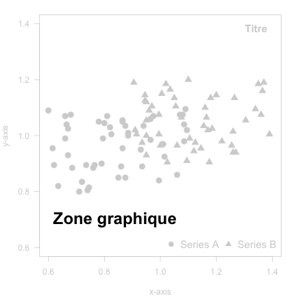
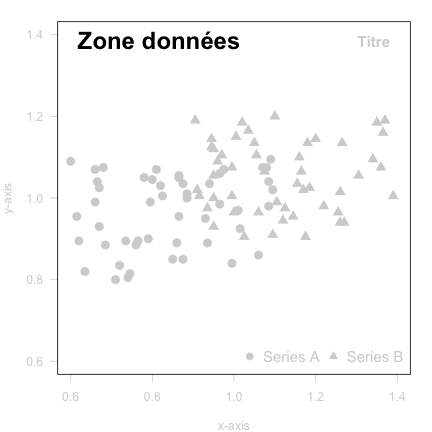
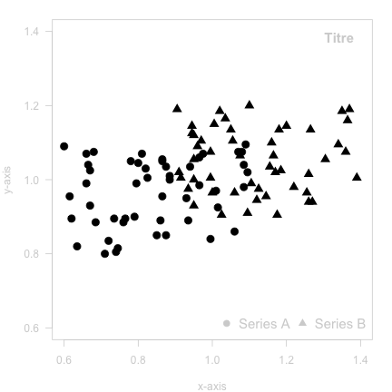

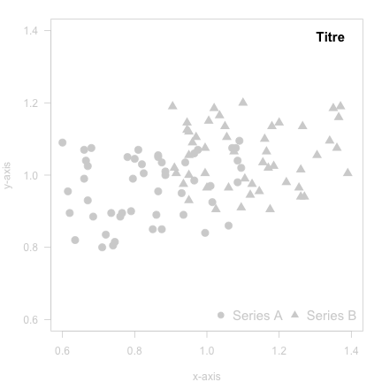
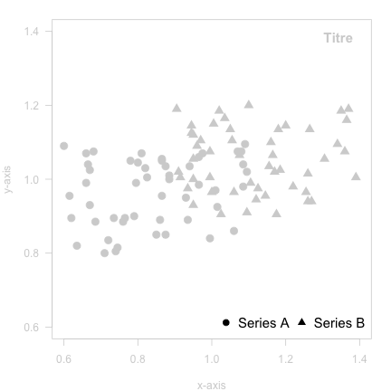
Aussi vrai pour une carte géographique
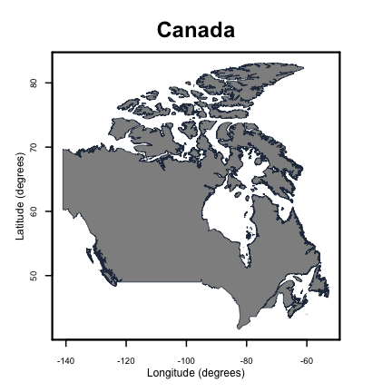


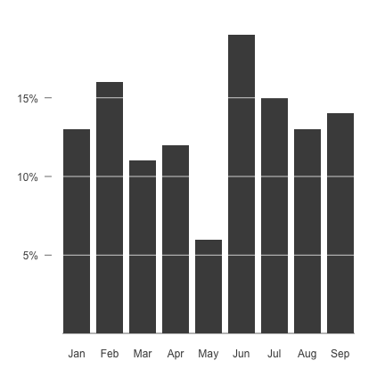
Utiliser du code pour produire des figures
x <- rnorm(100, 3, 1)
plot(x, pch = 20,
cex = abs(x),
col = '#41414177')


plot()boxplot(), barplot(), hist()lines(), points(), legend()plot(x, y, ...)
points(x, y, ...)
title(main, ...)
legend(legend, ...)

Vous n'avez besoin de connaître qu'une seule fonction:
plot()

Esthétique à améliorer
tab <- read.delim('../data/iris.txt')
plot(tab$petal.l ~ tab$petal.w)
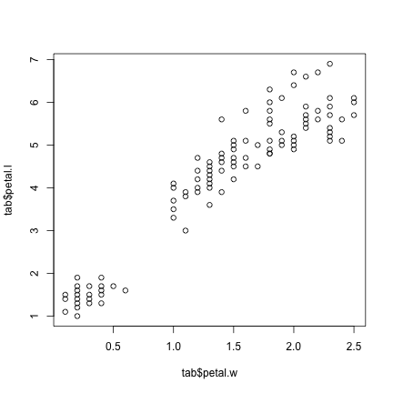
Décomposition graphique
# Empty plot
plot(0,
xlim = c(0, 8),
ylim = c(0, 3),
ann = FALSE,
axes = FALSE,
type = 'n')

## Grid
abline(v = c(2, 4, 6),
col = '#868484',
lty = 3)
abline(h = c(1, 2),
col = '#868484',
lty = 3)
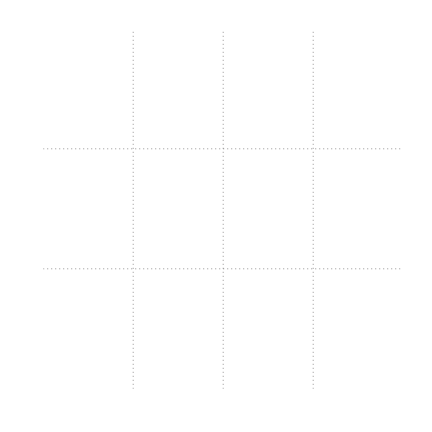
## Axes
## x-axis
axis(side = 1,
at = seq(0, 8, by = 2),
labels = seq(0, 8, by = 2))
mtext(text = 'Petal length (in cm)',
side = 1,
line = 1.75)
## y-axis
axis(side = 2,
at = seq(0, 3, by = 1),
labels = seq(0, 3, by = 1),
las = 1)
mtext(text = 'Petal width (in cm)',
side = 2,
line = 1.75)
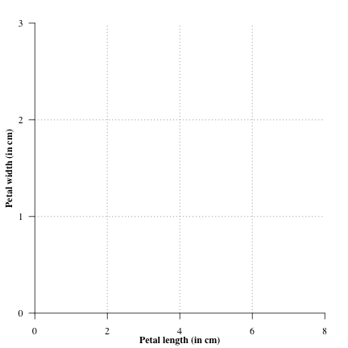
## Parameters
spp <- c('versicolor','virginica','setosa')
col1 <- c('#505050','#4e7bdb','#8b0000')
col2 <- paste0(col1, '88')
## Add points per species
for (i in 1 : length(spp)){
rat <- tab[tab$species == spp[i], ]
points(rat[ , c('petal.l', 'petal.w')],
col = col2[i],
bg = col2[i],
cex = rat[ , 'n']/1.25,
pch = 21)
}

## Linear regression
for (i in 1 : length(spp)){
rat <- tab[tab$species == spp[i], ]
petal.l <- data.frame(
seq(min(rat$petal.l),
max(rat$petal.l),
by = 0.05))
mod <- lm(petal.w ~ petal.l, data = rat)
ypred <- predict(object = mod,
newdata = petal.l,
se.fit = TRUE)
lines(x = newrat$petal.l, y = ypred$fit,
col = col1[i], lwd = 2)
lines(x = newrat$petal.l,
y = ypred$fit + ypred$se.fit,
col = col1[i], lwd = 1, lty = 2)
lines(x = newrat$petal.l,
y = ypred$fit - ypred$se.fit,
col = col1[i], lwd = 1, lty = 2)
}
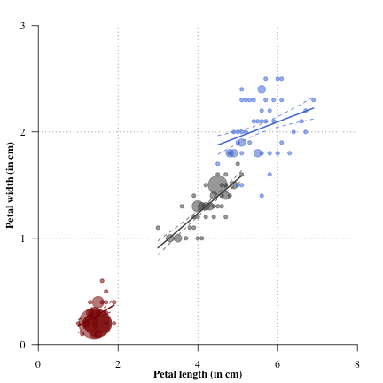
## Add legend
legend('topleft',
lwd = 3,
col = col1,
legend = paste('I.', spp),
bty = 'n')

library(ggplot2)
p <- ggplot(data = dat,
aes(x = x, y = y, colour = z)) +
geom_point(size = 3)
p
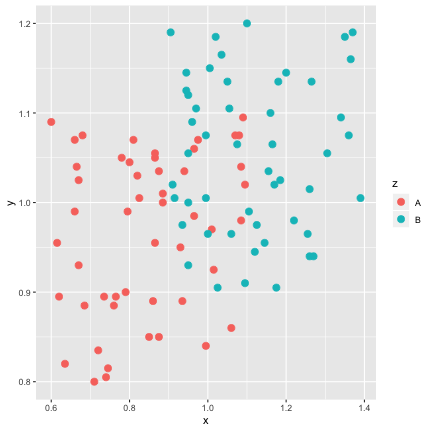
library(ggplot2)
p <- ggplot(data = dat,
aes(x = x, y = y, colour = z)) +
geom_point(size = 3) +
facet_wrap(~z)
p

library(ggplot2)
p <- ggplot(data = dat,
aes(x = x, y = y, colour = z)) +
geom_point(size = 3) +
facet_wrap(~z) +
theme_dark()
p
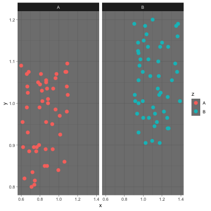
library(raster)
load('./predSP.RData')
ext <- extent(predSP) # Spatial extent
par(mfrow = c(11,12), mar = c(0,0,0,0))
for(i in 1:124) {
plot(0, xlim = ext[1:2], ylim = ext[3:4],
axes = FALSE, ann = FALSE, type = 'n')
plot(predSP[[i]], legend = FALSE, add = T)
}

sf, raster, mapview, rgdal, rgeos, ...graphicsggplot2marmap, raster, rnoaa, sdmpredictorsrgbif, robis, spoccggmap, mregions, osmdata, raster, rnaturalearthcanada <- getData('GADM',
country="CAN",
level=1)
plot(canada)
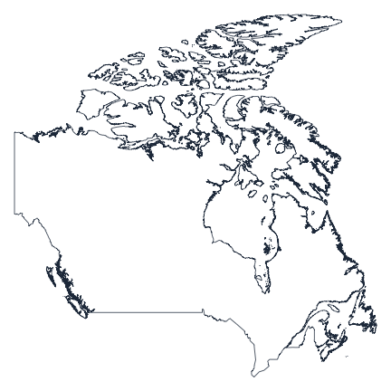

Construction de graphiques complexes
Partitionnement de base
mfrow dans par()par(mfrow = c(2, 2))
plot(rnorm(30), col = "red", main = "1")
box("figure")
plot(rnorm(30), col = "blue", main = "2")
box("figure")
plot(rnorm(30), col = "green", main = "3")
box("figure")
plot(rnorm(30), col = "black", main = "4")
box("figure")

Partitionnement avancé
layout()layout(matrix(c(1,2,4,1,3,4),nrow=3))
plot(rnorm(30), col = "red", main = "1")
plot(rnorm(30), col = "blue", main = "2")
plot(rnorm(30), col = "green", main = "3")
plot(rnorm(30), col = "black", main = "4")

Partitionnement avancé
layout()layout(matrix(c(1,2,4,1,3,4), nrow=3),
widths = c(1, 2),
heights = c(1, 2, 1))
plot(rnorm(30), col = "red", main = "1")
plot(rnorm(30), col = "blue", main = "2")
plot(rnorm(30), col = "green", main = "3")
plot(rnorm(30), col = "black", main = "4")

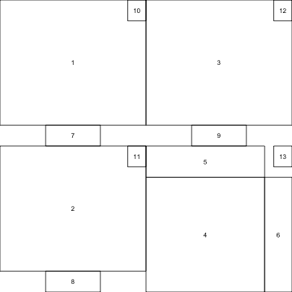

Graphiques superposés
new dans par()x <- seq(50, 1500, by = 50)
y1 <- sample(100:2000, size = 30)
y2 <- sort(y1)/100
y1 <- sort(y1, decreasing = T)
## Premier graphe
plot(x, y1, type = "h", lwd = 5, axes = F,
ylim = c(0, 2000), xlim = c(0, 1550))
axis(1); axis(2)
## Second graphe
par(new = TRUE)
plot(x, y2, type = "l", col = "red", lwd = 2,
ann = F, ylim = c(0, 30), axes = F,
xlim = c(0, 1550))
axis(4, col.axis = 'red')
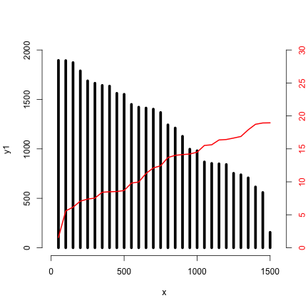
Graphiques imbriqués (médaillon)
new, fig dans par()x <- seq(50, 1500, by = 50)
y1 <- sample(100:2000, size = 30)
y2 <- sort(y1)/100
y1 <- sort(y1, decreasing = T)
## Premier graphe
plot(x, y1, type = "h", lwd = 5, axes = F,
ylim = c(0, 2000), xlim = c(0, 1550))
axis(1); axis(2)
## Second graphe
par(new = TRUE)
par(fig = c(.6,.9,.6,.9), mar = c(0,0,2,2))
plot(x, y2, type = "l", col = "red", lwd = 2,
ann = F, ylim = c(0, 30), axes = F,
xlim = c(0, 1550))
axis(1); axis(2); axis(3); axis(4)

htmltools, htmlwidgetsleaflet, plotly, networkD3, ...
shiny: https://shiny.rstudio.com/